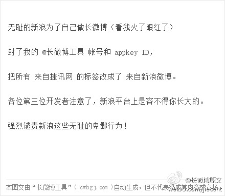

准备在@BeijingOpenParty 分享的话题《从零开始建立技术社区》本来是“社区领导人”微群要讨论的话题，借Open Party的场地交流下。貌似今天的活动火爆，因为@出版人周筠 老师请来了两位名人，吴军和杨早 @微盘 分享文件"build_tech_community.pdf" 网页链接
新浪平台如果这么干，以后谁敢陪你玩啊？//@eygle: 新浪是如何决定这样干的？@长微博工具:无耻的新浪为了自己做长微博（看我火了眼红了）封了我的 @长微博工具 帐号和 appkey ID，把所有 来自捷讯网 的标签改成了 来自新浪微博。各位第三位开发者注意了，新浪平台上是容不得你长大的。强烈谴责新浪这些无耻的卑鄙行为！(详见长微博) ... 网页链接 
#社区建设# 和@ZoomQuiet 合作讲了社区话题。讨论环节中，社区的持续发展是个难题，前任社区领导人退出后，社区往往因无人接手而自然消亡。我提议是采用要求成员付出而带来黏性，形成一种机制。而ZoomQuiet认为社区中的付出来源于自发，而不能指派，国人从小已经生活在被“指派”的环境中。
”政治“这个词，为什么在很多人眼里成了肮脏字眼呢？它其实是个中性词。－ ”为了让“美国公司”更强大，Mary给美国人的建议是：（1）参与政治；（2）帮助他人理解美国... ——看到王冉的博文《Mary Meeker (KPCB) 最新互联网报告读后感》有感而发的评论。网页链接
 网页链接
网页链接